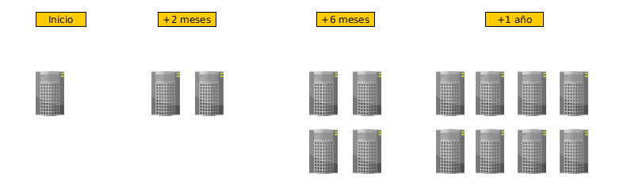

Escalando Bases de Datos
Conceptos Fundamentales
Escalando Bases de Datos
Dos formas de Escalar
Escalar Vertical (scale-up)
Escalar Horizontal (scale-out)
Escalar Vertical

- Scale-up
- Un server mas grande cada vez que notemos degradarse la performance.
Escalar Horizontal
Scale-out: Agregamos mas servers simples al cluster.
Es la forma mas barata de scalar. Y la única forma para soportar "Planet Size" Apps (google, facebook, twitter, amazon, etc).